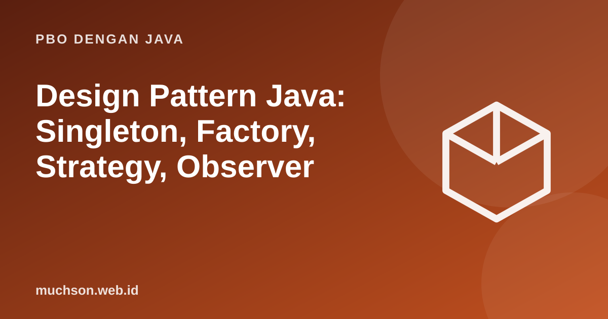

Beranda › Artikel › PBO dengan Java
PBO dengan JavaDesign Pattern Java: Singleton, Factory, Strategy, Observer
Pola desain adalah solusi yang teruji untuk masalah desain yang berulang. Nilai utamanya bukan kode siap tempel, melainkan kosakata bersama: ketika seorang rekan berkata "pakai Strategy di sini", seluruh struktur langsung terbayang.
Sebaiknya sudah paham: interface, polimorfisme, SOLID

Setelah membaca dan mencoba materi ini, Anda mampu:
- menjelaskan tujuan dan struktur Singleton, Factory Method, Strategy, dan Observer
- mengimplementasikan masing-masing dalam Java
- mengenali kapan sebuah pola tepat dan kapan berlebihan
- membaca diagram UML pola tersebut
| Pola | Kategori | Masalah yang diselesaikan |
|---|---|---|
| Singleton | Creational | Memastikan hanya ada satu instance |
| Factory Method | Creational | Memisahkan pembuatan objek dari pemakaiannya |
| Strategy | Behavioral | Mengganti algoritma saat berjalan |
| Observer | Behavioral | Memberi tahu banyak pihak ketika sesuatu berubah |
Singleton
class Konfigurasi {
private static final Konfigurasi INSTANCE = new Konfigurasi(); // dibuat sekali saat class dimuat
private final String bahasa = "id";
private Konfigurasi() { System.out.println("Konfigurasi dibuat"); }
static Konfigurasi get() { return INSTANCE; }
String bahasa() { return bahasa; }
}
enum Logger { // cara paling ringkas dan aman: enum dengan satu konstanta
INSTANCE;
void log(String s) { System.out.println("[LOG] " + s); }
}
public class Main {
public static void main(String[] args) {
Konfigurasi a = Konfigurasi.get(), b = Konfigurasi.get();
System.out.println(a == b);
Logger.INSTANCE.log("halo");
}
}Konfigurasi dibuat
true
[LOG] halo
Singleton pada dasarnya adalah keadaan global: sulit diuji dan menyembunyikan dependensi. Pertimbangkan menyuntikkan satu objek bersama melalui konstruktor (lihat DIP) alih-alih memanggil get() dari mana-mana.
Factory Method
interface Notifikasi { void kirim(String pesan); }
class Email implements Notifikasi { public void kirim(String p) { System.out.println("EMAIL: " + p); } }
class Sms implements Notifikasi { public void kirim(String p) { System.out.println("SMS: " + p); } }
class Push implements Notifikasi { public void kirim(String p) { System.out.println("PUSH: " + p); } }
class PabrikNotifikasi {
static Notifikasi buat(String jenis) {
return switch (jenis) {
case "email" -> new Email();
case "sms" -> new Sms();
case "push" -> new Push();
default -> throw new IllegalArgumentException("jenis tidak dikenal: " + jenis);
};
}
}
public class Main {
public static void main(String[] args) {
for (String j : new String[]{"email", "sms", "push"})
PabrikNotifikasi.buat(j).kirim("pesanan dikirim"); // pemakai tidak tahu class konkretnya
}
}EMAIL: pesanan dikirim
SMS: pesanan dikirim
PUSH: pesanan dikirim
Strategy
import java.util.function.DoubleUnaryOperator;
interface Pengiriman { double biaya(double beratKg); }
class Keranjang {
private Pengiriman strategi;
private final double beratKg;
Keranjang(double beratKg, Pengiriman strategi) { this.beratKg = beratKg; this.strategi = strategi; }
void ganti(Pengiriman s) { this.strategi = s; }
double ongkir() { return strategi.biaya(beratKg); }
}
public class Main {
public static void main(String[] args) {
Pengiriman reguler = b -> 9_000 * b; // strategi sebagai lambda
Pengiriman ekspres = b -> 15_000 + 12_000 * b;
Keranjang k = new Keranjang(2, reguler);
System.out.println("reguler: " + k.ongkir());
k.ganti(ekspres); // ganti algoritma saat berjalan
System.out.println("ekspres: " + k.ongkir());
}
}reguler: 18000.0
ekspres: 39000.0
Observer
import java.util.ArrayList;
import java.util.List;
import java.util.function.Consumer;
class Berita {
private final List<Consumer<String>> pelanggan = new ArrayList<>();
void berlangganan(Consumer<String> p) { pelanggan.add(p); }
void terbit(String judul) {
System.out.println("-- terbit: " + judul);
for (Consumer<String> p : pelanggan) p.accept(judul); // memberi tahu semua pengamat
}
}
public class Main {
public static void main(String[] args) {
Berita redaksi = new Berita();
redaksi.berlangganan(j -> System.out.println(" [email] " + j));
redaksi.berlangganan(j -> System.out.println(" [aplikasi] " + j.toUpperCase()));
redaksi.terbit("Java 25 dirilis");
redaksi.berlangganan(j -> System.out.println(" [arsip] " + j.length() + " karakter"));
redaksi.terbit("Belajar pola desain");
}
}-- terbit: Java 25 dirilis
[email] Java 25 dirilis
[aplikasi] JAVA 25 DIRILIS
-- terbit: Belajar pola desain
[email] Belajar pola desain
[aplikasi] BELAJAR POLA DESAIN
[arsip] 19 karakter
Bahaya terbesar pola desain adalah patternitis: memakai pola karena ingin, bukan karena perlu. Pola mencegah satu masalah dengan harga kerumitan. Pastikan masalahnya benar-benar ada.
1. Tambahkan strategi pengiriman "gratis di atas 500 ribu" yang bergantung pada total belanja.
2. Apa perbedaan Strategy dan Factory?
3. Mengapa Observer yang tidak pernah berhenti berlangganan dapat menyebabkan kebocoran memori?
4. Cari satu pola desain di pustaka standar Java.
- Pola desain adalah kosakata solusi yang teruji.
- Singleton: satu instance (hati-hati keadaan global).
- Factory: pisahkan pembuatan dari pemakaian.
- Strategy: algoritma yang dapat ditukar; Observer: pemberitahuan banyak pihak.
- Pakai bila masalahnya nyata.
Tanya jawab
Ada berapa pola desain?
Apakah pola desain masih relevan dengan lambda?
Bagaimana mempelajarinya?
Referensi
- Gamma, Helm, Johnson, Vlissides, Design Patterns: Elements of Reusable Object-Oriented Software (Addison-Wesley, 1994)
- Eric Freeman dan Elisabeth Robson, Head First Design Patterns (O'Reilly, edisi ke-2)
- Refactoring Guru: Design Patterns
- Joshua Bloch, Effective Java (edisi ke-3, Addison-Wesley, 2018)